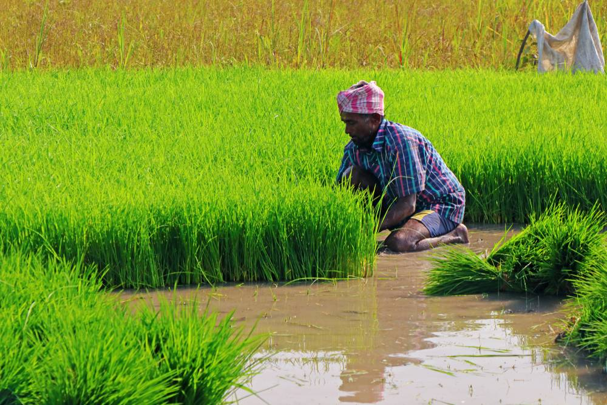
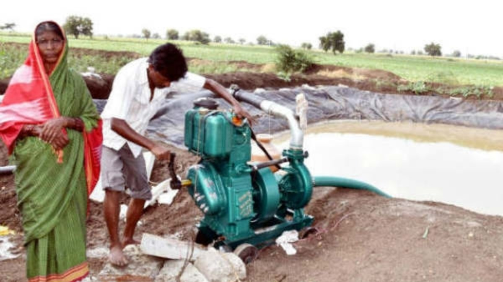

Krishi Bhagya Scheme
The Krishi Bhagya Scheme is an initiative launched by the Government of Karnataka to improve agricultural sustainability, particularly in drought-prone areas. Introduced in 2014-15, this scheme focuses on rainwater conservation, efficient irrigation, and modern farming practices to help farmers overcome the challenges of water scarcity.

Objectives of the Scheme
- Improve water availability for agriculture through rainwater harvesting.
- Ensure sustainable and profitable farming in dry-land areas.
- Promote modern irrigation techniques such as drip irrigation and sprinkler systems.
- Reduce dependency on monsoon rains by providing water storage solutions.
- Enhance farm productivity and encourage crop diversification.
Key Components of the Krishi Bhagya Scheme
1. Farm Ponds
Farm ponds, also known as Krishi Hondas, are excavated structures used for rainwater collection. These ponds store water during the rainy season, ensuring a steady supply of water for irrigation during dry spells.
2. Polythene Lining
To minimize seepage and water loss, the government provides subsidized polythene sheets to line farm ponds, helping farmers retain more water for longer periods.
3. Fencing
To ensure safety and prevent water contamination, the scheme supports the installation of protective fencing around farm ponds.
4. Water Pumps and Micro-Irrigation

Farmers are provided with subsidized diesel or solar-powered pumps to extract water from farm ponds. Additionally, modern irrigation systems like drip irrigation and sprinklers are encouraged to maximize water efficiency.
5. Poly Houses and Shade Nets
To promote the cultivation of high-value crops, the scheme provides support for the construction of poly houses and shade nets, allowing farmers to grow vegetables, flowers, and fruits more efficiently.
Implementation and Achievements
- From 2014-15 to 2020-21, the scheme helped construct 289,827 farm ponds, significantly improving water availability in rural Karnataka.
- These farm ponds collectively hold 1,472.31 lakh cubic meters of rainwater.
- Originally launched in four drought-prone zones, the scheme has expanded to cover all 236 taluks across 31 districts of Karnataka.
- Currently, the government aims to build 30,000 to 40,000 new farm ponds annually to improve water conservation efforts.
Budget and Financial Assistance
In the 2024-25 Karnataka Budget, the state government has allocated ₹200 crore for the reintroduction of the Krishi Bhagya Scheme. This funding aims to:
- Support farmers in constructing farm ponds.
- Encourage micro-irrigation systems like drip and sprinkler irrigation.
- Subsidize equipment for rainwater harvesting and storage.
Eligibility Criteria
To avail benefits under the Krishi Bhagya Scheme, farmers must meet the following criteria:
- Applicants must be resident farmers of Karnataka.
- Farmers should own a minimum of one acre of land.
- Those who have already availed subsidies for pump sets or irrigation systems in the past three years are ineligible for those components but can still receive subsidies for farm ponds.
How to Apply
Farmers can apply for the scheme through the following process:
- Visit the nearest Raitha Samparka Kendra (RSK) or agriculture department office.
- Submit the required documents, including land ownership records and identity proof.
- The application will be reviewed, and a government officer will conduct a field inspection.
- Upon approval, farmers will receive financial assistance for constructing farm ponds and purchasing irrigation equipment.
Documents Required
- Land ownership documents.
- Aadhaar Card or Voter ID.
- Bank account details for subsidy disbursement.
- Recent passport-size photographs.
Benefits of the Krishi Bhagya Scheme
- Improves water availability and reduces dependency on unpredictable rainfall.
- Enhances agricultural productivity and income for farmers.
- Encourages sustainable farming practices and water conservation.
- Supports high-value crop cultivation through poly houses.
- Reduces irrigation costs by promoting micro-irrigation and solar-powered pumps.
Challenges and Future Scope
While the Krishi Bhagya Scheme has shown positive results, certain challenges remain:
- Need for better awareness among farmers regarding farm pond maintenance.
- Expansion of the scheme to more regions facing acute water shortages.
- Increased government support for advanced irrigation methods like sensor-based irrigation.
- Ensuring timely subsidy disbursement to farmers.
Conclusion
The Krishi Bhagya Scheme has proven to be a game-changer in Karnataka's agricultural sector. By focusing on rainwater harvesting, micro-irrigation, and farm pond construction, the scheme has provided long-term benefits to farmers, helping them increase productivity and income. With continued government support and proper implementation, Krishi Bhagya will play a crucial role in shaping the future of sustainable agriculture in Karnataka.
For more details, visit the official website: Krishi Bhagya Scheme